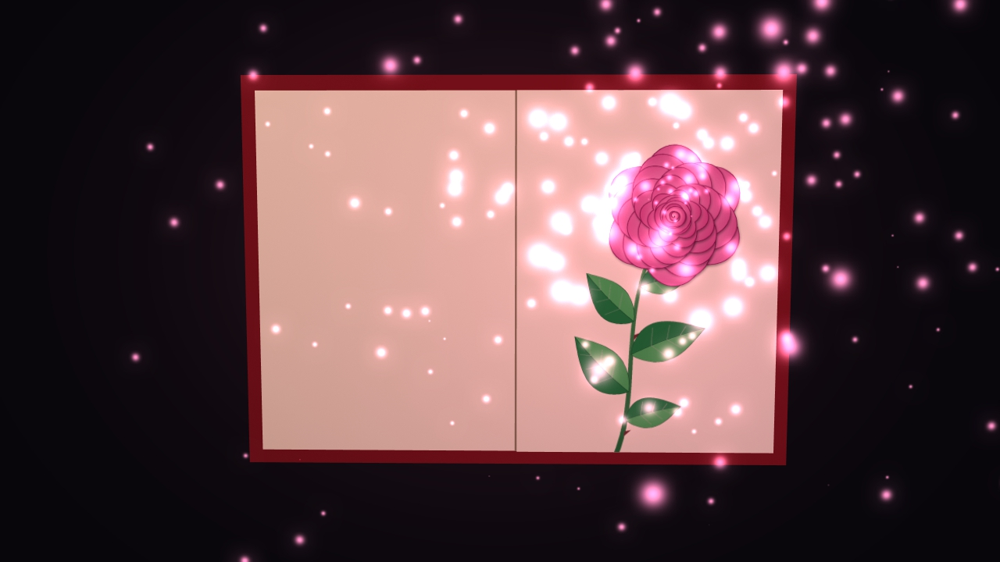

TouchDesigner · MediaPipe · Python
Rose Book
A book you turn with your hand. Move your hand in front of the camera, a page turns, and a rose grows out of it.
In the browser: click, swipe, or use the arrow keys. In TouchDesigner: your hand.
How it works
Everything runs live inside one TouchDesigner project, offline, on a normal laptop with a webcam.
Your hand
MediaPipe hand tracking reads your wrist and fingers from the webcam, many times a second.
The gesture
Move your hand across the centre line to turn a page. Twist like a door knob, or flip your palm, if you prefer: it’s one setting.
The book
The page turns in 3D, a rose grows from bud to bloom over 48 frames, and light particles drift around it.

Get the project
Free to download. The .toe file opens with the whole book already built.
- Download the project
Use the button below, then unzip it anywhere. The folder can live anywhere: it finds its own files.
- Get the MediaPipe component
It’s 187 MB, too big for GitHub. Right-click
get_mediapipe.ps1→ Run with PowerShell. It downloads it from the official release intotoxes/. - Open rose_book.toe
In TouchDesigner. Allow camera access when asked, and wait until the hand tracking shows your hand.
- Turn a page
Move your hand across the centre of the camera view. The first move opens the cover; each one after turns a page.
Needs TouchDesigner 2025.33230 or newer (the free license works) and a webcam. On a Mac, download release.zip v0.6.0 from mediapipe-touchdesigner and copy toxes/MediaPipe.tox in by hand.
No camera? Select rose_book, open the Book page of its parameters, turn on Test Without Camera and drag Test Hand Roll from 1 to −1. Don’t press Space: it pauses the timeline.
Screen-only mode
For an exhibition or a big screen: hide the TouchDesigner editor and show only the book, full screen.
rose_book.toe is already set up for this. Just press F1.
- Press F1
This is Perform Mode: the editor disappears and only the book’s output (
/project1/rose_book/final) stays on screen. Esc brings the editor back. - Fill the screen
Click the
performoperator at the top level (/). In its parameters set Opening Size to Fill Location, turn Borders off, and for a second screen set Justify and Offset to… to Specify Display and choose the Display. - Open straight into the screen
Open the Window Placement dialog (under the Edit or Dialogs menu, depending on your build), turn on Start in Perform Mode, then save with Ctrl+S. Next time the file opens, it’s screen-only from the first second.
- Keep it clean
Keep the camera in front of the screen at hand height, and keep Show Center Line off so visitors only see the book.